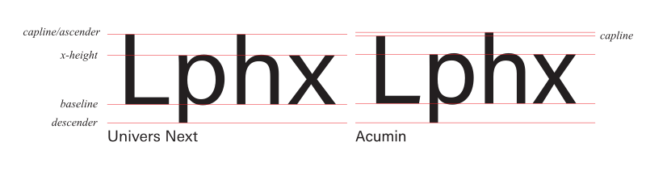
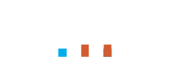

Univers Next is a neo-grotesque sans serif typeface created by Adrian Frutiger in 1957 during the post war boom of the Swiss style. Frutiger was also known for creating the iconic typeface Avenir, highlighting Adrian’s expertise in typography. Although the typeface was designed and developed in Switzerland, it was released through the French type foundry: Deberny & Peignot, where Frutiger worked. Some key design characteristics include: a uniform stroke weights, tight spacing, and a large type family with 20+ different styles. Univers is a typeface that was created to demonstrate Swiss modernism, function primarily across print and provide designers with a numbered classification system. Overall, Univers is a legible, neutral and versatile typeface that can be used broadly.
Acumin
Acumin is a sans serif typeface created by decorated Adobe type designer Robert Slimbach, famous creator of Minion and Myriad typefaces. Acumin was released in 2016 as part of Adobe’s expanding Adobe Font type library created within Adobe’s in-house type design program specialized for publishing and screens. Acumin’s main purpose is functionality built to serve as a highly readable interface intended for digital screens and easy to synchronize across all Adobe platforms. Some of its key design characteristics include: geometric + humanist influence, large x-height, and an extensive typeface family, with over 15 different styles. Overall Acumin is a very versatile and clean typeface that is easy to read and great for large scale digital use.
Comparison
Pentagram Diagram

Differences
There is a major size difference between the two typefaces when it comes to the number one. The image above was created in Illustrator using the respective typeface at the same 100 pt size.The Univers Next "two" is considerable larger than Acumin's two at 100 pts. Additionally, it also has a straighter stem connecting the curved bowl at the top to the base of the number compared to Acumin's curvier stem. The bottom terminal for Univers Next is straight vertical wheras for Acumin it is slanted. The typefaces have very similar a's, both have flat top bowl curves that connect to the stems, similar counter shape and size, and flat terminals without tails. The e's between the typefaces are similar in the sense of counter size and bowl curve with a small difference in space between the end of the staight terminals. Additionally both typefaces have a closed aperture between the middle crossbar and the terminals.When compared side to side at 100pt font, the tittle of the Univers Next typeface is more squared whereas for Acumin it is more rectangular.These k's are some of the most different between the two typefaces, as the Univers Next one has legs that have a much tighter junction as compared to Acumin. In fact the Univers one meet at the middle of the k stem whereas the Acumin leg stems off the upper one, providing a more spacious junction at the middle of the k.In this character, the terminal of the t in the Univers Next typeface is vertically slanted while the terminal for Acunmin's t is straight and taller. The main difference between these two characters is that the Univers Next one has an overall wider stance whereas the Acumin character is a bit narrower.The lowercase y of Univers Next is noticeably wider compared to that of Acumin's. The terminal for the Univers Next typeface is more linear compared to the curved terminal of Acumin's. The key distinguishable difference in the Q's for Univers Next and Acumin is the spur. The Univers Next typeface has a straight horizontal spur while the Acumin Q has a longer spur that extends at an angle.The question mark is another very different character between the two typefaces. In Univers Next, the tittle is a smaller square shape compared to the longer more rectangular shape of Acumin's. The bowl curves are also distinctly different as the curve for Univers' is a lot larger. Lastly the terminals are different, with Univers' being straight horizontal facing outward while Acumin's being straight facing downward.This punctuation mark is different in size, and angle. The Univers Next comma is smaller and has a sharper angle while the Acumin comma is taller and has a smoother curve to it.The ampersand symbol is very different in each typeface. The Univers Next ampersand uses arms, stems, and bowls to create a unique shape, while the Acumin version has a more traditional approach, utilizing counters, strokes and bowls.
Similarities
These are both 100 pt number threes, and beside the obvious size difference and middle terminal, the numbers are pretty similar. They both have flat end terminals and similar bowl curves.These fours are very similar, only really having noticiable differences in the terminals and the steepness of the angle of slant of the four.Both lowercase g's display similar bowl curves and similar counter sizes. Additinally they both have straight, vertical facing terminals and have extensions of the stem that go past the counter. The s for each typeface is very similar, with no real noticable differences at first glance. Both contain vertical end terminals and similar curvy spines. Only when they overlap can you really notice a difference in the curves of the spines.These two G's are very similar, with the curve of the bowl being similar, and they both have straight ending terminals connected to an arm that goes toward the middle of the character. They also have similar aperture sizes. One thing that does distinguish them however is the spur on Acumin's "G".The two P's contain a large counter and vertical stems with straight clean terminals. the arms and bowl curves are roughly the same as well. There are a couple of main similarities that come with the uppercase R's of the typefaces. For examople: the stem, bowl curve, and counter all have indistinguishable characteristics. The leg angle is the only real difference between these two, with the Univers Next version having more of a curve in a tightened space while the Acumin version having a straighter leg with more space.The uppercase U's for each typeface appear identical. The curve of the bowl is the same and at first glance the angle of the stems appear the same. When overlapped, there is a faint distinction where the Univers Next U is a little wider.Besides the height difference at 100 pt, the two characters seem pretty similar. Earlier the lowercase y's were compared and although they had some similarities, the two characters were clearly different. However, in the uppercase forms they both have a middle vertical stem that has a flat terminal and they both have similar angles of strokes.Besides the height difference and the rectangular vs square tittle, the exclamation marks seem to be the same. They have similar stem widths and angles.

These periods are similar in the sense of width but the Acumin one is a bit taller taking a more rectangular shape compared to the square shape of Univers' which becomes clearly visible in the overlapped area.
Examples and visual references
Univers Next
Univers Next is the main typeface for this movie poster. It is being used in the bold variation to create a really effective contrast between the poster and the main image.The quote of this article is in the Univers Next bold typeface to really draw attention to it and make it very impactful.Similarly, Univers Next is being used in the article as a header and body text. It is a clean and legible typeface making it a great choice for long text.
Acumin
Acumin is also a really clean and legible typeface and in this example its bold variation is utilized as a header in a magazine.This example also shows Acumin utilized as a header typeface for a magazine article. This example however showcases Acumin being used in a more creative way, displaying the versatility of this typeface. This example is a poster promoting a film festival in Santarém, Brazil. It utilizes variations of some letters to add another layer of design that makes the poster really pop. This example really highlights Acumin's widespread global reach and versatility.